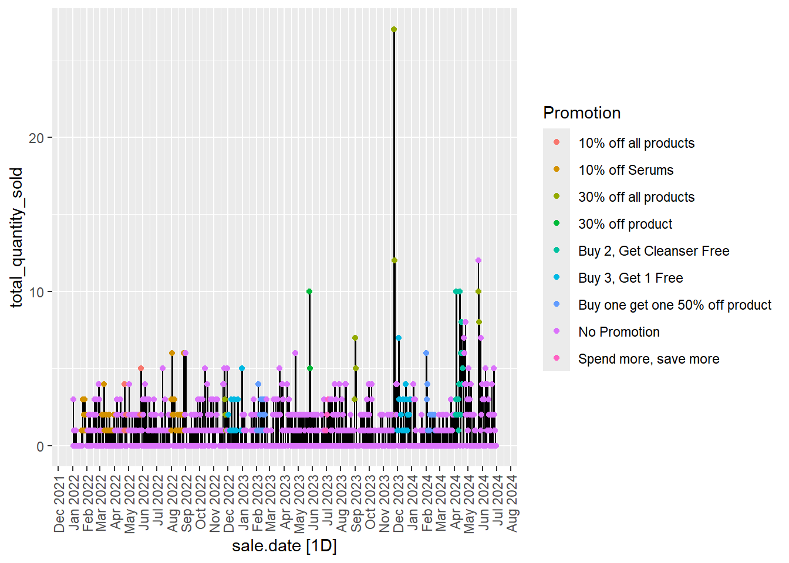
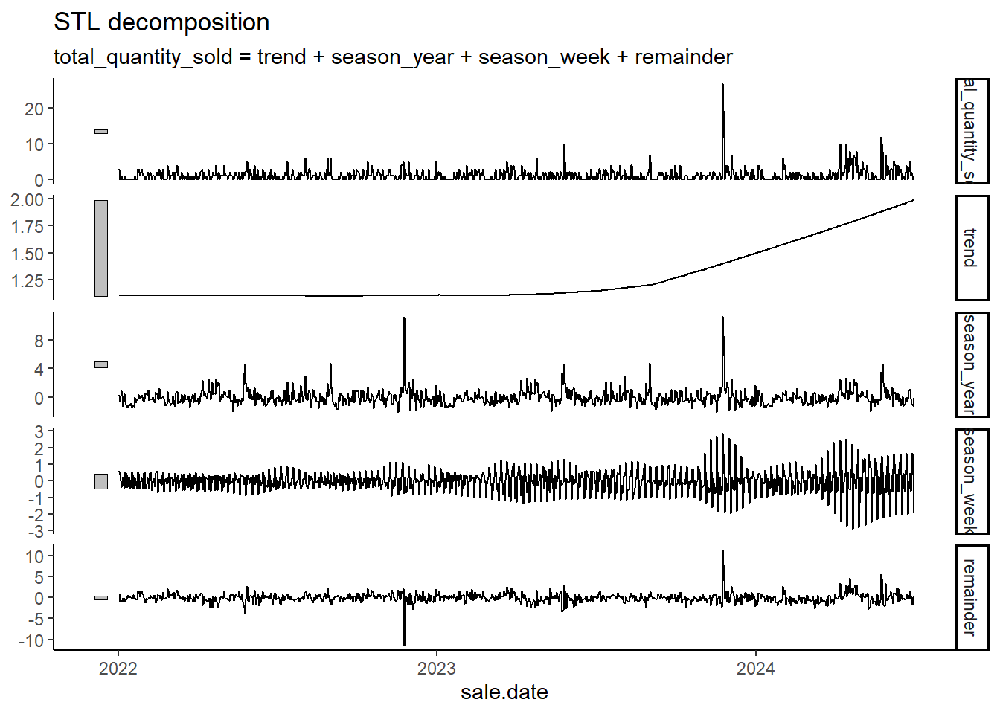
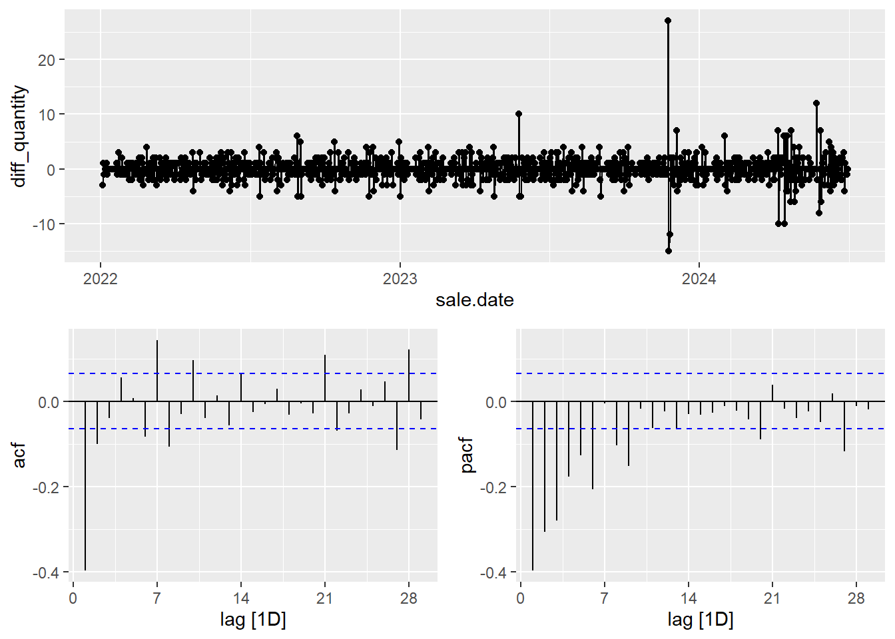
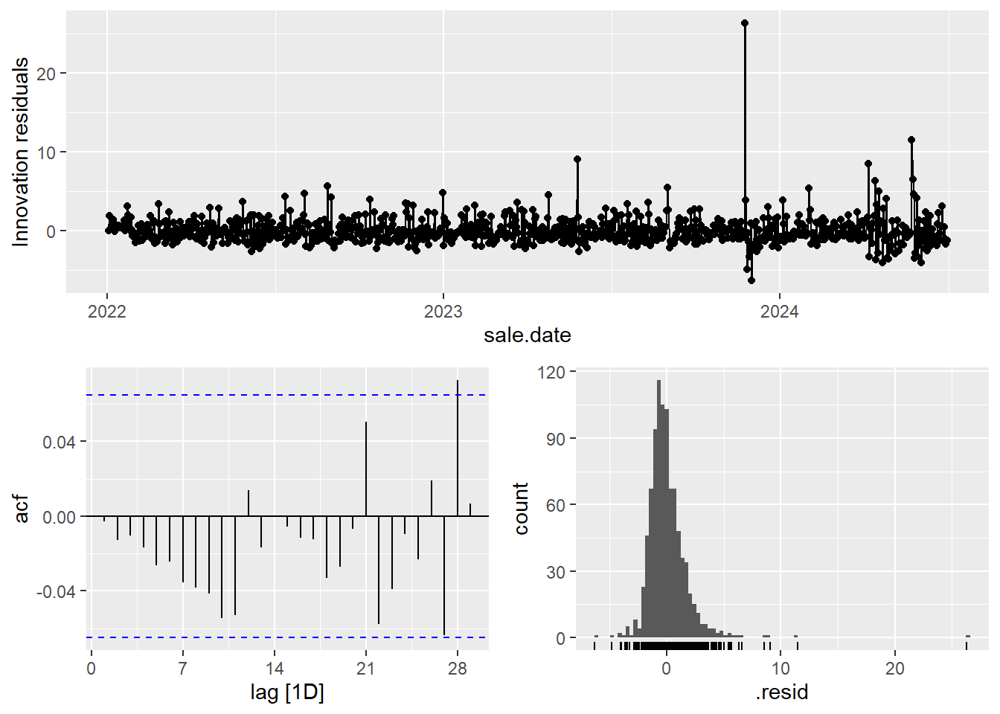
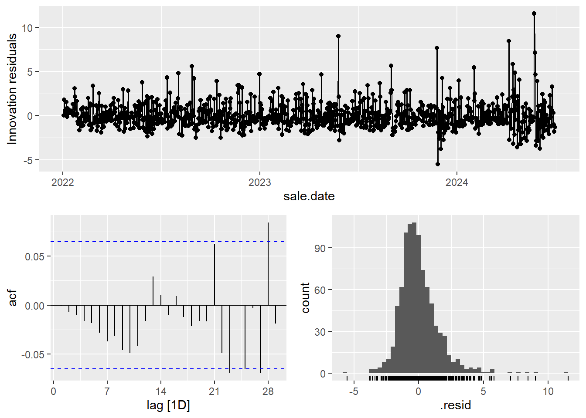

3 Modeling
Lets bring in the data from the EDA and the promotion data!
data <- read.csv('C:\\Users\\austi\\OneDrive\\Documents\\skinlaundryapp\\subset_data.csv')
promo_data <- read.csv('C:\\Users\\austi\\OneDrive\\Documents\\Interviews\\Skin Laundry\\Promotion details and dates.csv')Check to make sure the data looks good.
## 'data.frame': 1353 obs. of 5 variables:
## $ clinic.name : chr "Clinic G" "Clinic G" "Clinic G" "Clinic G" ...
## $ sale.date : chr "2022-01-02 00:00:00" "2022-01-02 00:00:00" "2022-01-02 00:00:00" "2023-01-02 00:00:00" ...
## $ product.name : chr "Hyaluronic Acid Serum" "Hyaluronic Acid Serum" "Hyaluronic Acid Serum" "Hyaluronic Acid Serum" ...
## $ quantity.sold: int 1 1 1 1 1 1 1 1 1 1 ...
## $ Promotion : chr "No Promotion" "No Promotion" "No Promotion" "No Promotion" ...#There needs to get one observation per day
data <- data %>%
group_by(sale.date, clinic.name, product.name,Promotion) %>%
summarize(total_quantity_sold = sum(`quantity.sold`), .groups = 'drop')To build a time series model, I am going to convert the data into a tsibble. This gets our data into the correct format and makes model building much easier.
data<- data %>%
mutate(sale.date = as.Date(sale.date)) %>%
as_tsibble(index = sale.date)%>%
fill_gaps() %>%
mutate(total_quantity_sold = ifelse(is.na(total_quantity_sold), 0, total_quantity_sold)) %>%
mutate(Promotion = ifelse(is.na(Promotion),"No Promotion", Promotion)) %>%
mutate(clinic.name = ifelse(is.na(clinic.name),"Clinic G", clinic.name)) %>%
mutate(product.name = ifelse(is.na(product.name),"Hyaluronic Acid Serum", product.name))I am going to split the data into a training and test set. The training set will be all the data up until July of 2024 and the test set will be all of the data from July 2024-September 2024.
train <- data %>%
select(total_quantity_sold, sale.date, Promotion) %>%
filter_index(~ "2024-06-30")
test <- data %>%
select(total_quantity_sold, sale.date, Promotion) %>%
filter_index("2024-07-01" ~ "2024-09-30")Lets get a basic look for what the data looks like over time.
library(scales)
autoplot(train, total_quantity_sold) +
geom_line(aes(y = total_quantity_sold)) +
geom_point(aes(color = Promotion)) +
scale_x_date(
breaks = "1 month", # Set the breaks to monthly intervals
labels = date_format("%b %Y") # Format the labels as Month-Year
) +
theme(axis.text.x = element_text(angle = 90, hjust = 1, vjust = 0.5))
This is a very messy graph but a few points are good to point out. When there is a spike in sales for the product, there seems to be a promotion attached to the spike. It is note worthy to point out the 30% off all products, 30% off product, and Buy 2 Get Cleanser free are the promotions that have the biggest spikes in the data. On the flip side, the Spend more Save more, Buy 3 Get 1 free, and 10% off serums don’t seem to boost sales for this specific product.
I am going to create a STL Decomposition to decide if the data has seasonality or a trend to it.
## # A dable: 911 x 8 [1D]
## # Key: .model [1]
## # : total_quantity_sold = trend + season_year + season_week + remainder
## .model sale.date total_quantity_sold trend season_week season_year remainder season_adjust
## <chr> <date> <dbl> <dbl> <dbl> <dbl> <dbl> <dbl>
## 1 stl 2022-01-02 3 1.10 0.579 0.293 1.03 2.13
## 2 stl 2022-01-03 0 1.10 0.368 -0.684 -0.787 0.316
## 3 stl 2022-01-04 1 1.10 -0.391 0.884 -0.597 0.506
## 4 stl 2022-01-05 0 1.10 -0.296 0.134 -0.940 0.163
## 5 stl 2022-01-06 0 1.10 0.219 -1.25 -0.0710 1.03
## 6 stl 2022-01-07 0 1.10 -0.0131 -0.707 -0.383 0.720
## 7 stl 2022-01-08 1 1.10 -0.460 0.459 -0.102 1.00
## 8 stl 2022-01-09 0 1.10 0.561 -0.710 -0.954 0.149
## 9 stl 2022-01-10 0 1.10 0.391 -1.34 -0.154 0.949
## 10 stl 2022-01-11 0 1.10 -0.407 -1.14 0.448 1.55
## # ℹ 901 more rows
## # A tibble: 1 × 9
## trend_strength seasonal_strength_week seasonal_peak_week seasonal_trough_week spikiness linearity curvature stl_e_acf1 stl_e_acf10
## <dbl> <dbl> <dbl> <dbl> <dbl> <dbl> <dbl> <dbl> <dbl>
## 1 0.360 0.273 6 1 0.000147 7.03 4.91 -0.0497 0.224There is not enough evidence to suggest there to be a trend or seasonality in the data.
The next step is to figure out if the data is stationary. I am going to perform a KPSS test to determine if there is stationarity or not.
## [1] 0.00905298## # A tibble: 1 × 2
## kpss_stat kpss_pvalue
## <dbl> <dbl>
## 1 0.892 0.01Since our p-value is to high, this suggest that the data is a random walk. It is not possible to forecast a random walk so in order to combat this, I am going to difference the quantity sold variable(The response variable). This will let us be able to create a forecast.
Next I am going to look at a Auto Correlation(ACF) and Partial Auto Correlation (PACF) plot to determine the patterns in the data.
## Warning: Removed 1 row containing missing values or values outside the scale range (`geom_line()`).## Warning: Removed 1 row containing missing values or values outside the scale range (`geom_point()`). Notes from the ACF and PACF plot:
To me, it looks like there is an exponential decrease in the pacf plot. This suggests that there are no auto regressive(AR) terms in the data and we should only be looking at how many moving average(MA) terms to add to our model. With the acf plot, there is a clear big spike at lag 1 and then a consistent hovering pattern around the confidence interval. This suggest there is one MA term that needs to be in the model.
Moving forward, I will create a handful of different models to see which one works the best. Based on the AIC and BIC selection criteria, I will decide which model to move forward with.
models <- train %>% model(
auto = ARIMA(diff_quantity),
step = ARIMA(diff_quantity, stepwise = FALSE),
MA1 = ARIMA(diff_quantity ~ 0 + pdq(0,1,1) + PDQ(0,0,0)),
MA7 = ARIMA(diff_quantity ~ 0 + pdq(0,1,7) + PDQ(0,0,0)),
ARIMA91 = ARIMA(diff_quantity ~ 0 + pdq(9,1,1) + PDQ(0,0,0))
)
model_results <- as.data.frame(models)
glance(models)## # A tibble: 5 × 8
## .model sigma2 log_lik AIC AICc BIC ar_roots ma_roots
## <chr> <dbl> <dbl> <dbl> <dbl> <dbl> <list> <list>
## 1 auto 3.39 -1844. 3701. 3701. 3730. <cpl [5]> <cpl [0]>
## 2 step 3.39 -1844. 3701. 3701. 3730. <cpl [5]> <cpl [0]>
## 3 MA1 5.06 -2030. 4063. 4063. 4073. <cpl [0]> <cpl [1]>
## 4 MA7 3.11 -1810. 3637. 3637. 3675. <cpl [0]> <cpl [7]>
## 5 ARIMA91 3.14 -1811. 3643. 3644. 3696. <cpl [9]> <cpl [1]>## Warning: Removed 1 row containing missing values or values outside the scale range (`geom_line()`).## Warning: Removed 1 row containing missing values or values outside the scale range (`geom_point()`).## Warning: Removed 1 row containing non-finite outside the scale range (`stat_bin()`).
## # A tibble: 1 × 3
## .model lb_stat lb_pvalue
## <chr> <dbl> <dbl>
## 1 ARIMA91 11.2 0.00363For the ARIMA models, I decided to pick a model with 9 AR terms, 1 MA terms, and took a difference. I choose this setup by looking at the ACF and PACF plots. The PACF plot looked liked it had an exponential decrease in it. Apon further examination at the tail end of the plot, the 20th and 27th lags show signs of being included in the model which tells me there needs to be AR terms in the model.
After building the model, I looked at the residuals to determine if white noise was left over. I assessed white noise in two ways. The first was looking at the residual plot. I am comfortable with the distribution of the residuals being normal and the ACF plot being close to the bounds of the confidence interval. The second was performing a Lijung Box test. With a p-value of 0.003 and the alpha level being 0.008, this tells me there is a little bit of noise that can still be modeled.
When looking at the original plot, there was a point intervention that stood out to me. By including this point into the model, I think it might reduce the noise in the model to only have white noise left over.
#Point intervention 692
# Add a point intervention column to both the Train AND Test sets
train$point <- rep(0,911)
test$point <- rep(0,92)
train$point[692] <- 1
# Fit ARIMA model with intervention
models_point <- train %>% model(
point_intervention = ARIMA(diff_quantity ~ point + lag(point) + 0 + pdq(9,1,1) + PDQ(0,0,0))
)
# Glance at model summary
glance(models_point)## # A tibble: 1 × 8
## .model sigma2 log_lik AIC AICc BIC ar_roots ma_roots
## <chr> <dbl> <dbl> <dbl> <dbl> <dbl> <list> <list>
## 1 point_intervention 2.39 -1687. 3400. 3400. 3462. <cpl [9]> <cpl [1]># Visualize residuals of the point intervention model
models_point %>% select(point_intervention) %>% gg_tsresiduals()## Warning: Removed 1 row containing missing values or values outside the scale range (`geom_line()`).## Warning: Removed 1 row containing missing values or values outside the scale range (`geom_point()`).## Warning: Removed 1 row containing non-finite outside the scale range (`stat_bin()`).
# Ljung-Box test for autocorrelation in the residuals
augment(models_point) %>%
filter(.model == 'point_intervention') %>%
features(.innov, ljung_box, lag = 12, dof = 10)## # A tibble: 1 × 3
## .model lb_stat lb_pvalue
## <chr> <dbl> <dbl>
## 1 point_intervention 9.49 0.00868# Forecasting the next 92 periods beyond the training data and plotting
forecast_values_point <- models_point %>%
forecast(new_data = test)
# Extract forecasted values
forecasted_mean <- forecast_values_point$.mean
# Ensure your actual values match the forecast horizon length
actual_values <- test$total_quantity_sold[1:length(forecasted_mean)]
# Calculate residuals (difference between actual and forecasted values)
residuals <- actual_values - forecasted_mean
# Calculate MAE (Mean Absolute Error)
MAE <- mean(abs(residuals))
MAE## [1] 1.418334When adding a point intervention to the data, the model seems to only have white noise left over. I am comfortable with this conclusion due the residuals looking like a normal distribution, the lags are within the range of the CI and the Lijung Box p-value came back at 0.008 with an alpha level of 0.008.
To asses the accuracy of this model, I decided to use Mean Absolute Error(MAE). When using this model to forecast future demand of the Hyulanioc Acid product at clinic G for Q3, this model was 1.4 units off, on average.
In the summary section, I will give a more detailed overview wrapping this analysis up and how Skin Laundry can use this model moving forward.